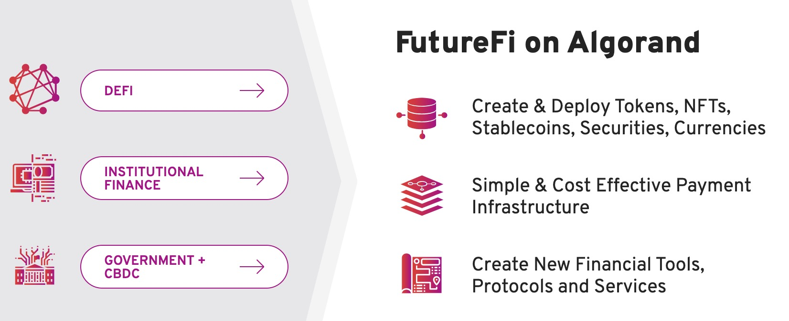

Theta
Purpose
Technology and products
Group
What they have done
Future
Algorand
Purpose
Their target is to build an ecosystem which can be used by both decentralized and traditional finance.
Technology and products

As showed above, no matter you’re DeFi users / institution users / goverment users, you can do the things on the right through Algorand.
The products contain two parts:
1. Financial primitives (Capabilities in Layer-1)
This part includes 4 key features:
- Smart contracts
- Algorand Standard Assests(ASA): this provides a standalized, Layer-1 mechanism to represent any type of asset on the Algorand blockchain. These can include fungible, non fungible, restricted fungible and non restricted fungible assets. It means all kinds of digitals assets can be represented on the Algorand blockchain.
- Atomic Transfers: provide a trustless solution in Layer-1 and offer a secure way to simutaneously transfer a number of assets among a number of parties. The transactions are grouped and all the transactions are executed or none of them are executed.
- Rekeying: allow users to change their private key without changing the public address.
2. Core protocal
- Pure Proof-of-Stake(PPoS): Every user who processes algos can participate in the consensus protocal. The
Verifiable Random Function(VRF)decides which users are selected to be committee for this new block(Soft vote). This committee votes to confirm the new block. Then a new committee is selected which votes to check the block proposal of last step(Certify vote).
Group
- Team: many of them are from MIT. And some have the cryptocoins' background, some have technology background, and some have financial background.
- Execution: the company is founded about 2.5 years and they really have done a lot of jobs. More details can be found here: https://www.algorand.com/resources/news
What they have done
A lot of applications / projects / partners are using or have relationship with Algorand. Check the full list: https://www.algorand.com/ecosystem